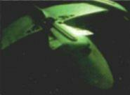

Impero Romulano - Scout |
|
|
|  |
Caratteristiche di una nave tipo di questa classe:
Dimensioni: 98 metri di lunghezza, 94 metri di larghezza, 15 metri di
altezza
Equipaggio: 3 persone
Designazioni: Vascello scientifico, ricognitore, mezzo da trasporto
leggero
Disgregatori: 2 banchi
Siluri:1 tubi di lancio
Velocità: Warp 7.5 per due giorni
Dotato di dispositivo di occultamento.
| Pi distrutto durante l'atterraggio su Galorndon Core. | The Enemy |
| [Senza Nome] Comandato dall'ammiraglio Jarok, autodistrutto | The Defector |
| [Senza Nome] Vascello scientifico | The Next Phase |